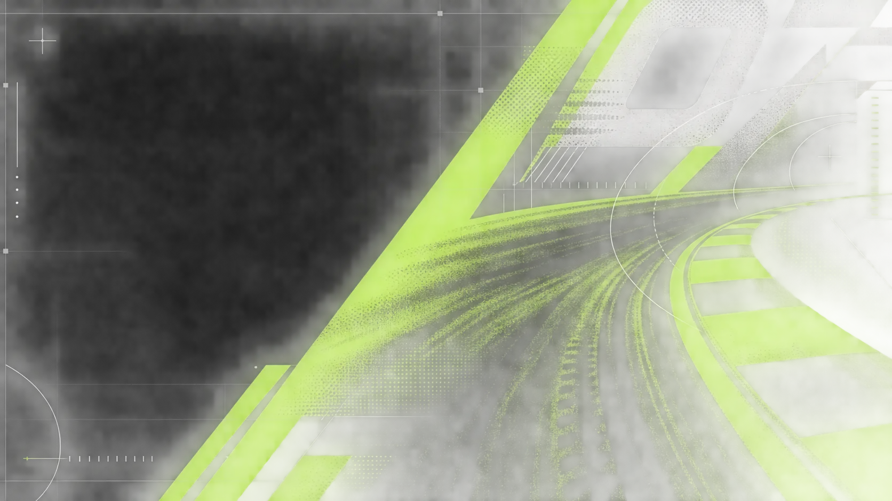
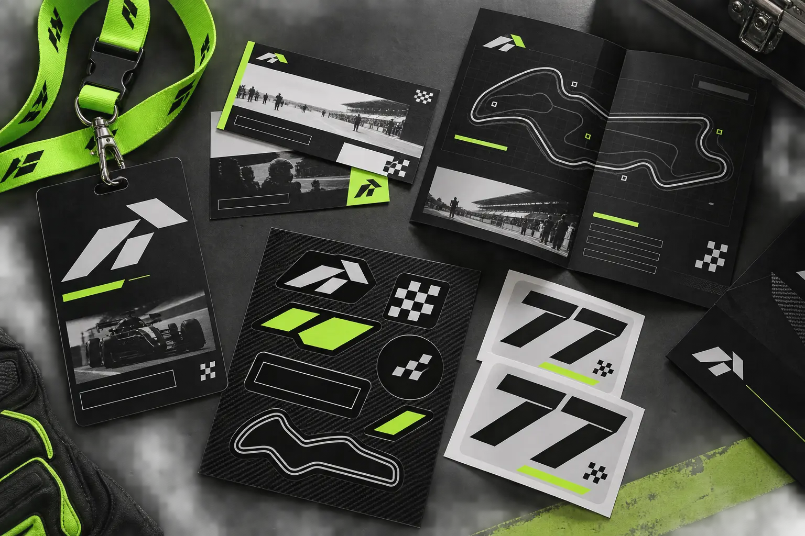
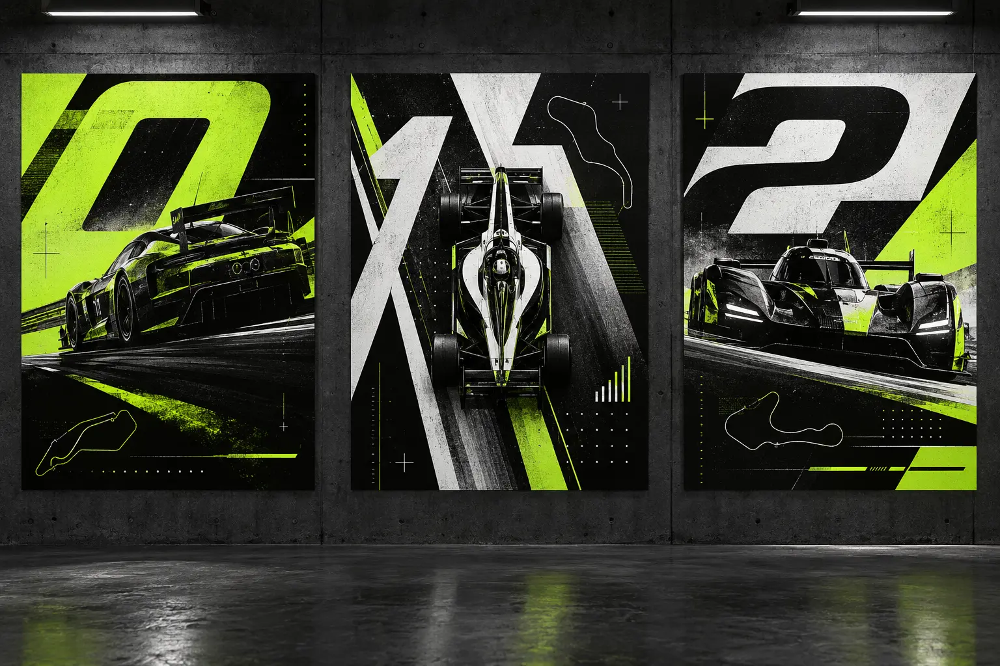
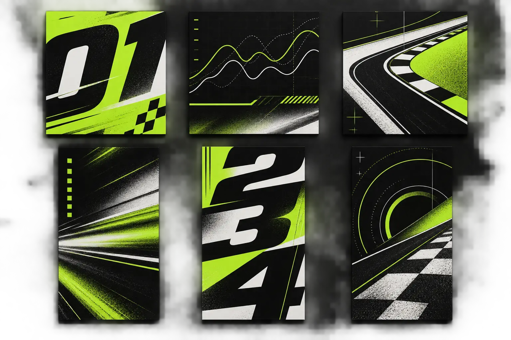
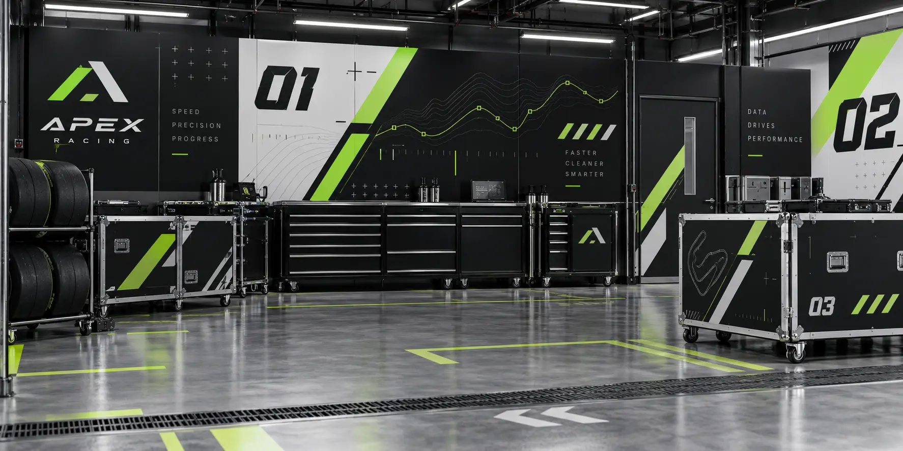

RACE SYSTEM / 10
APEX
Precision under pressure.
BUILT FOR
THE LIMIT.
THE IDEA
A performance identity shaped by telemetry, speed and exact decisions. APEX turns racing data into a visual system that feels engineered rather than decorated.
APEX
A compact wordmark leans forward without using familiar racing clichés. The cut A becomes a track marker, lap symbol and motion cue.
BLACKOUT
#050706CARBON
#202423APEX LIME
#B8FF24GRID WHITE
#F2F4ED
#050706CARBON
#202423APEX LIME
#B8FF24GRID WHITE
#F2F4ED
00:47.82
Condensed headlines deliver impact. Monospaced information controls lap times, driver data and technical detail.

RACE KIT / SYSTEM 07+0.08
Credentials, track maps, timing cards and number graphics turn race data into a physical identity system.

Oversized numerals, track geometry and telemetry marks create a campaign that feels fast before anything moves.


ONE SYSTEM.
EVERY SECOND.
LIFT.APX–07 / 21:40
82FASTEST LAP / LIVE
THOUSANDTH.2026 ENDURANCE PROGRAM
DATA AT
FULL SPEED.
01 / SCAN
Telemetry builds the grid.
02 / ACCELERATE
Numbers compress through frame.
03 / LOCK
The apex mark resolves the sequence.
06 / FIVE RACE GRAPHICSDATA BECOMES
DATA BECOMES
PRESSURE.
Five high-speed applications translate telemetry, timing and driver identity into campaign energy.
LIFT.
A compressed typographic statement built for speed.
07
A number system that owns every surface.
.82
Live timing becomes a dynamic graphic asset.
PEX
Credentials use the cut mark as an access code.
.001
A modular message for motion-led environments.